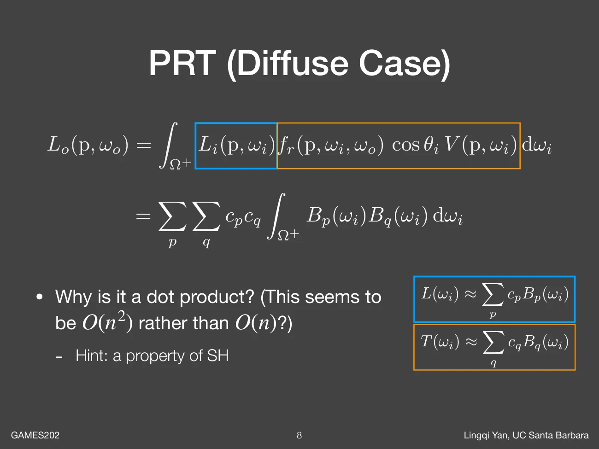
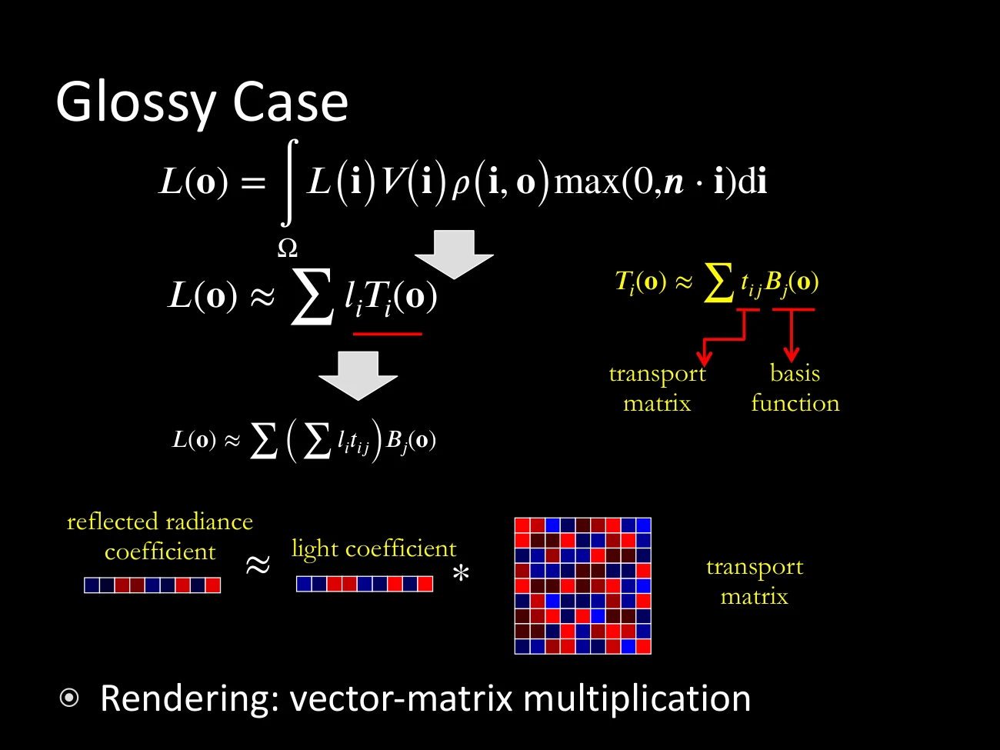
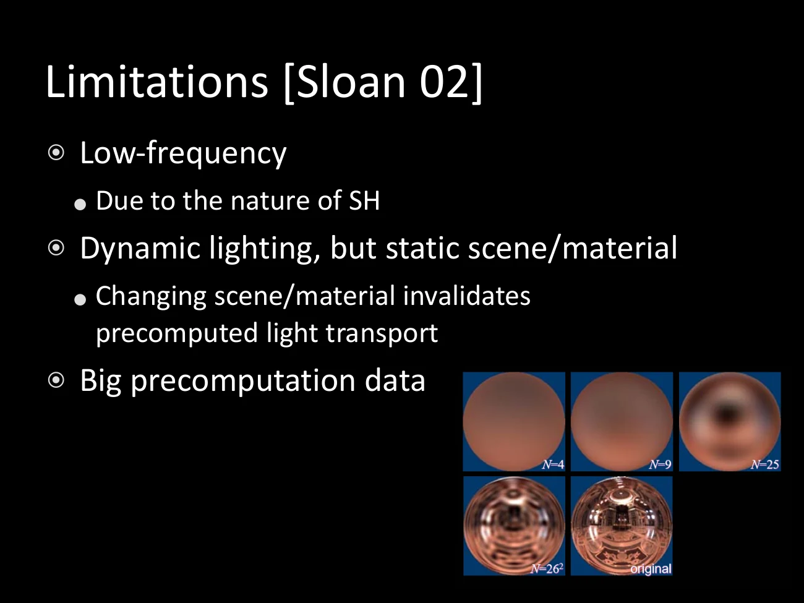
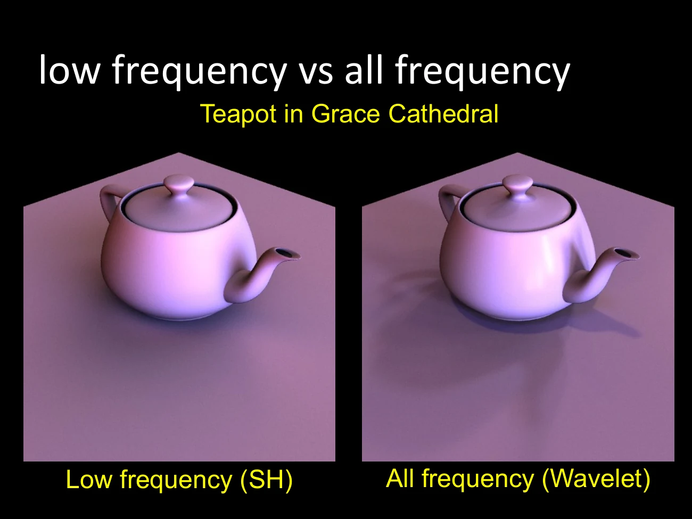
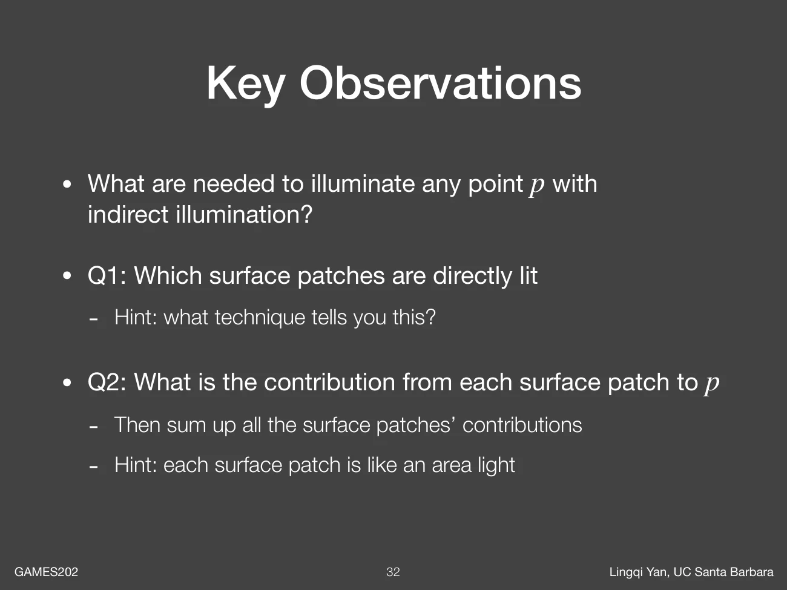
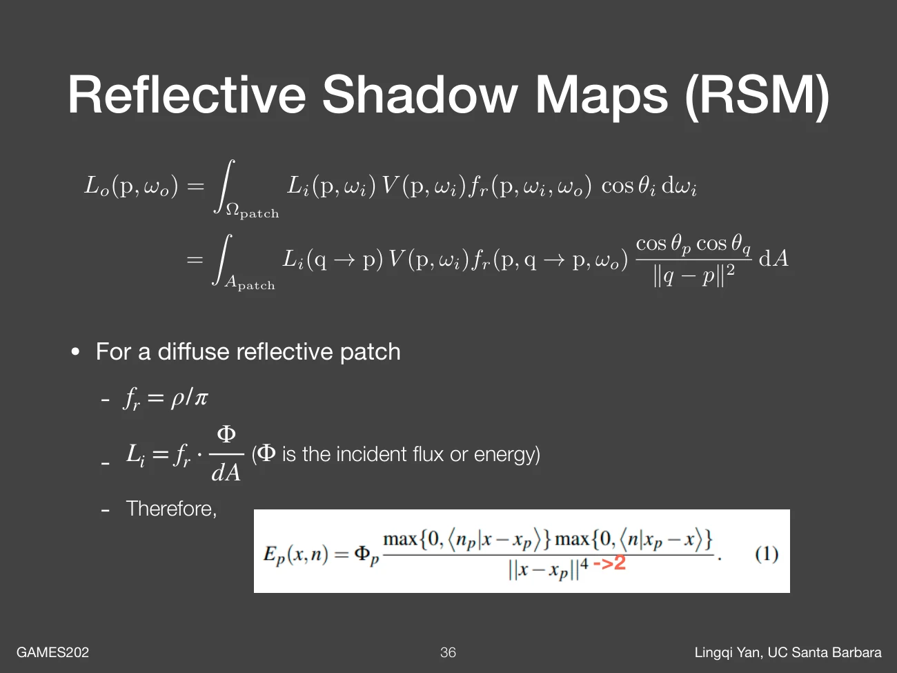
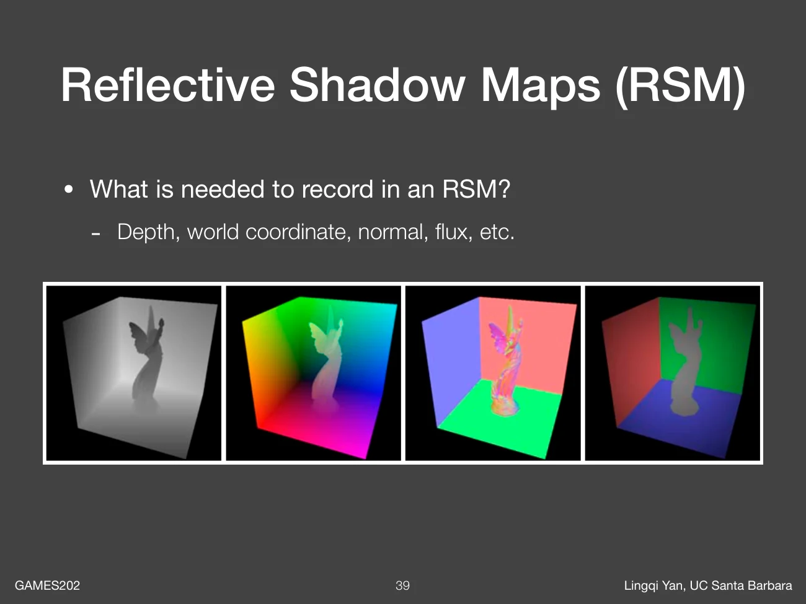
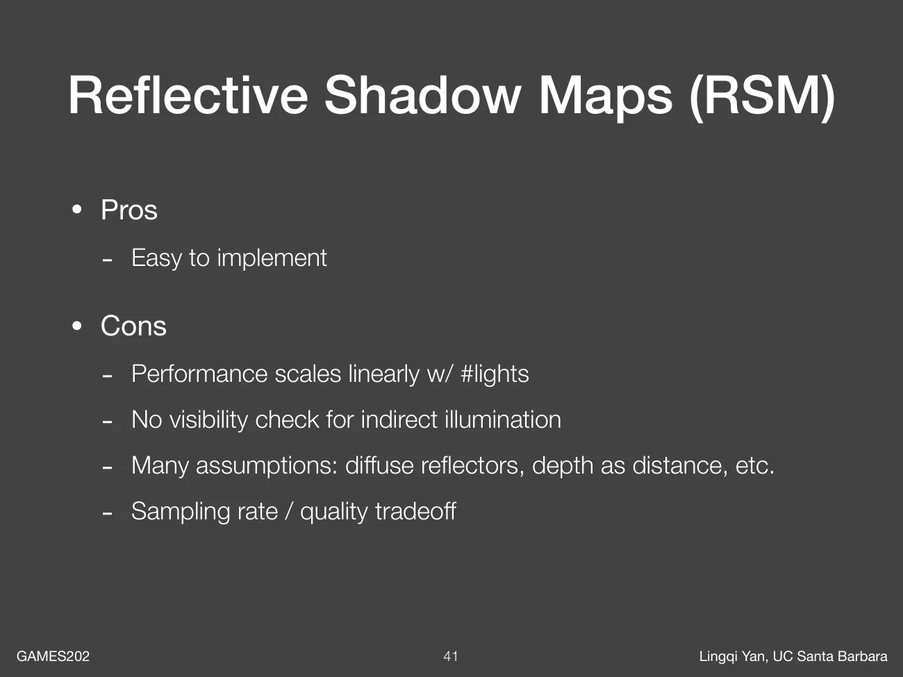

第 7 讲：实时全局光照（一）——从 PRT 到反射阴影贴图
把预计算辐射传输（PRT）推广到光泽材质，并用反射阴影贴图（RSM）在实时中近似一次反弹的间接光照。
◆ 学完这一讲，你应该能
能复述 PRT 中光照与传输分离的思想，并解释漫反射与光泽反射在渲染时分别为什么是点积和向量-矩阵乘法。
能说明球谐函数（SH）用于 PRT 的局限性（低频、静态场景/材质、预计算数据大），并知道小波（Wavelet）为什么能做到全频率。
能写出一次反弹间接光照的两个关键问题：哪些面片被直接照亮、每个面片对 shading point 的贡献是多少。
能解释 RSM 如何复用 shadow map 的每个像素作为小面片光源，并写出其渲染方程与面积积分转换。
能列举 RSM 的优缺点与工程使用场景（手电筒等局部光源），并知道性能随光源数线性增长。
核心结论速记
PRT 把渲染方程拆成光照项与传输项，各自投影到 SH 基函数上；漫反射渲染是系数点积，光泽反射是向量乘传输矩阵。
SH 是低频基函数，因此 PRT 只能表示低频光照与低频传输；小波是非线性逼近，能保留少量大系数表示全频率。
PRT 的传输与场景/材质绑定，场景或材质一变预计算就失效，且预计算数据量大。
实时 GI 通常只做一次反弹：直接光照照亮的表面再次作为光源照亮其他点。
RSM 用 shadow map 的每个像素记录位置、法线、通量，把每个像素当作小面片光源，对 shading point 做采样求和。
RSM 的间接光没有可见性检查，且假设反射面是漫反射、用深度近似距离，质量与采样率需要权衡。
RSM 性能随光源数线性增长，适合手电筒等少量局部光源，不适合大量光源。
011. 从 PRT 复习到光泽反射：光照与传输的分离
上一讲把环境光照下的着色问题拆成「光照」和「光传输」两部分。渲染方程写作： \[ L_o(p,\omega_o)=\int_{\Omega^+} L_i(p,\omega_i)\, f_r(p,\omega_i,\omega_o)\, \cos\theta_i\, V(p,\omega_i)\, d\omega_i \] 其中 \(L_i\) 是入射光照，\(f_r\cos\theta_i V\) 合起来是光传输（light transport）。PRT 的核心思想是：光照可以变，但传输对静态场景和材质是固定的，可以预计算。
对漫反射情形，把光照和传输分别用同一组 SH 基函数 \(B_p(\omega_i)\) 展开： \[ L_i(\omega_i)\approx\sum_p c_p B_p(\omega_i),\qquad T(\omega_i)\approx\sum_q c_q B_q(\omega_i) \] 代回积分，利用 SH 的正交性，积分变成两个系数向量的点积： \[ L_o \approx \sum_p c_p c_q \int_{\Omega^+} B_p B_q\, d\omega_i \] 因为基函数正交，只有 \(p=q\) 的项非零，所以最终就是 \(\sum_i l_i t_i\) 形式的点积。这就是课件里问「为什么是点积而不是 \(O(n^2)\)」的答案：SH 的正交性把双重求和坍缩成一次点积。
光泽（glossy）情形不再能坍缩成一个标量传输，因为出射方向 \(\omega_o\) 也要展开： \[ T_i(\omega_o)\approx\sum_j t_{ij} B_j(\omega_o) \] 于是渲染变成「光照系数向量」乘「传输矩阵」再重建出射方向上的值。课件把这一步总结为：漫反射是点积，光泽是向量-矩阵乘法。


补充说明
课件中 SH 展开的符号 \(c_p, c_q\) 同时用于光照和传输系数，阅读时注意区分。
常见坑
把 SH 正交性当成「任意基函数都成立」→ 只有正交基（如 SH）才能把双重求和坍缩成点积；小波不是正交的简单点积形式。
光泽情形仍用漫反射的点积公式 → 高光方向错误、能量不守恒；应使用传输矩阵并注意矩阵维度与基函数数量匹配。
UE / Unity 落地
UE 的 Sky Light 使用 SH 表示环境光照（低阶），概念上对应 PRT 的光照系数；材质中的 Diffuse/Specular 对应传输项。
Unity 的 Light Probes 用 SH 存储间接光，属于「光照用 SH 表示」的工程实例，但传输不是逐点预计算矩阵。
022. PRT 的边界：低频、静态与预计算数据
PRT 很优雅，但课件明确列出三条限制：
- 低频：SH 是低频基函数，阶数有限时只能表示平滑变化的光照和传输。高频细节（锐利阴影、小面积光源、焦散）会被抹平。
- 动态光照但静态场景/材质：传输项 \(T\) 是在固定场景几何和材质下预计算的。一旦物体移动或材质改变，预计算的传输就失效，必须重新计算。
- 预计算数据大：每个 shading point 都要存一组传输系数（漫反射）或一个矩阵（光泽），存储量随顶点数 × 基函数数量增长。
课件随后给出后续工作方向：换更多基函数（小波、Zonal Harmonics、球面高斯 SG、分段常数）、把静态场景推广到动态场景、把固定材质推广到动态材质、支持半透明/毛发等效果、以及用解析计算替代预计算。
这里要建立一个工程直觉：PRT 是「用存储换运行时」的典型。运行时极快（点积/矩阵乘法），但代价是离线预计算和内存。现代引擎里类似的权衡随处可见，例如 Lightmap 是静态的、Light Probe 是低频的、Lumen 则试图用运行时追踪替代预计算。

常见坑
以为 PRT 能处理任意动态场景 → 传输预计算绑定几何与材质，动态物体需要重新预计算或改用其他方法。
用低阶 SH 去表示锐利阴影 → 阴影边缘变糊是基函数带宽不足，不是采样噪声。
UE / Unity 落地
UE 的 Lightmap 是静态预计算光照的典型，对应 PRT「静态场景」假设；动态物体则依赖 Light Probe 或 Lumen。
Unity 的 Baked GI 与 Light Probes 同样体现「预计算换运行时」的取舍。
033. 小波：用非线性逼近换取全频率
SH 的问题是低频。课件引入小波（Wavelet），具体是二维 Haar 小波。与 SH 不同，小波变换后只保留少量非零系数，这是一种非线性逼近（non-linear approximation）：不是固定截断到前 \(N\) 个基函数，而是保留绝对值最大的 \(N\) 个系数。
课件给出的对比很直观：在 Grace Cathedral 场景中的茶壶，用 SH 只能得到低频的模糊光照，而用小波能得到全频率（all-frequency）的结果，包括锐利的高光。
但小波也有代价：
- 小波基不是正交的简单点积形式，PRT 中的「点积」会变成更复杂的三重积（triple products），运行时更贵。
- 非线性逼近意味着保留哪些系数依赖具体光照，预计算和运行时查找都更复杂。
课件的叙事逻辑是：没有一种基函数是完美的，SH 低频但运行时便宜，小波全频率但运行时更贵。工程上要根据目标效果选择表示。

补充说明
课件提到作者自己的第一篇论文《Accurate Translucent Material Rendering under Spherical Gaussian Lights》，说明球面高斯（SG）也是常用基函数之一。
常见坑
把小波也当成「取前 N 个系数」的线性截断 → 小波是非线性逼近，保留的是绝对值最大的系数，系数位置随光照变化。
认为小波一定全面优于 SH → 小波运行时更贵（三重积），且实现复杂，工程上要权衡。
UE / Unity 落地
UE/Unity 没有直接暴露小波 PRT 的通用接口；概念上对应「用更复杂的基函数换更锐利的高光」，现代引擎更多用屏幕空间反射或光追替代。
044. 实时全局光照：一次反弹间接光的两个问题
课件从 PRT 转向实时 3D 全局光照（GI）。先给直觉：任何被直接照亮的表面都会再次成为光源，这就是一次反弹（one-bounce）间接光。实时渲染通常只做这一次反弹，因为多次反弹代价太高。
要计算某个点 \(p\) 的间接光照，需要回答两个问题：
- Q1：哪些面片被直接照亮？ 提示：什么技术能告诉你这一点？答案是 shadow map——shadow map 的每个像素对应一个被直接照亮的小面片。
- Q2：每个面片对 \(p\) 的贡献是多少？ 提示：每个面片就像一个小面积光源，对所有面片的贡献求和即可。
这两个问题就是后续 RSM 的骨架。理解这一点后，后面所有实时 GI 方法（LPV、VXGI、SSAO/SSDO/SSR）都可以用「如何找直接照亮的面片」和「如何求贡献」来归类。

常见坑
把间接光理解成「多次反弹」→ 实时方法通常只做一次反弹，多次反弹是离线渲染的范畴。
认为 shadow map 只能做阴影 → 它同时提供了「哪些面片被直接照亮」的信息，这是 RSM 复用的基础。
UE / Unity 落地
UE 的 Lumen 做的是运行时多次反弹的近似；RSM 是其简化版，只做一次反弹且依赖 shadow map。
Unity 的 Enlighten 实时 GI 也是基于表面作为二次光源的思想，但实现方式不同。
055. 反射阴影贴图（RSM）：把 shadow map 像素当小面片光源
RSM 直接回答上一节的两个问题。
Q1 的答案：用一张经典 shadow map。每个像素记录一个小面片的信息：深度、世界坐标、法线、通量（flux）。课件强调一个假设：反射面是漫反射，因此该面片向所有方向出射的辐射度相同，我们可以用相机方向上的出射辐射度代表所有方向。
Q2 的答案：每个面片对 \(p\) 的贡献是一个对立体角的积分，可以转换成对面片面积的积分： \[ L_o(p,\omega_o)=\int_{\Omega_{patch}} L_i(p,\omega_i) V f_r \cos\theta_i\, d\omega_i \] 转换成面积积分后出现 \(\cos\theta_p\cos\theta_q / \|q-p\|^2\) 的几何项。对漫反射面片 \(f_r=\rho/\pi\)，且 \(L_i = f_r \cdot \Phi / dA\)（\(\Phi\) 是入射通量），最终每个面片的贡献可以写成通量乘以几何项和 BRDF。
加速：理论上 shadow map 所有像素都能贡献，但太多。课件提示用 PCSS 中的「分步 + 采样」思想：对 shadow map 做随机采样，用采样率换质量。
RSM 需要记录：深度、世界坐标、法线、通量等。
工程场景：RSM 常用于游戏中的手电筒等局部光源（《战争机器》《神秘海域》《最后生还者》）。


补充说明
RSM 的间接光没有可见性检查（no visibility check for indirect illumination），这是它最大的质量缺陷之一。
常见坑
忘记 RSM 假设反射面是漫反射 → 用光泽材质时高光方向错误；RSM 只对漫反射反射面成立。
直接对 shadow map 所有像素求和 → 性能爆炸；必须做采样加速（类似 PCSS 的分步采样）。
把深度直接当距离用 → 课件明确指出这是假设之一，斜视角下会引入误差。
UE / Unity 落地
UE 没有内置 RSM，但可用 Custom Render Pass 或插件实现；概念上对应「用 shadow map 做一次反弹间接光」。
Unity 的 HDRP 有 Screen Space Global Illumination，思想类似但用屏幕空间信息而非 shadow map。
066. RSM 的优缺点与工程取舍
课件最后总结 RSM：
优点：容易实现。复用已有的 shadow map 管线，增加一张 G-Buffer 记录面片信息即可。
缺点：
- 性能随光源数线性增长：每个光源都需要一张 RSM 和一次采样求和，光源一多就撑不住。
- 间接光没有可见性检查：面片对 \(p\) 的贡献没有做遮挡测试，会出现漏光。
- 假设多：反射面是漫反射、深度当距离、面片是均匀出射等。
- 采样率/质量权衡：采样太少会有噪声，采样太多性能下降。
工程结论：RSM 适合少量局部光源（手电筒、篝火、爆炸闪光），不适合大量光源的场景。这与现代引擎中 Lumen 等方法的定位形成对比：Lumen 试图用运行时追踪处理更一般的场景，但代价是更高的 GPU 开销和更复杂的管线。
下一讲会继续实时 GI：3D 空间中的 VXGI，以及图像空间中的 SSAO、SSDO、SSR 等。

常见坑
在大量光源场景中使用 RSM → 性能随光源数线性增长，帧率崩溃；应限制 RSM 光源数量或改用其他 GI 方案。
忽略漏光问题 → 间接光没有可见性检查，遮挡物背后会出现不该有的亮斑；可通过深度测试或屏幕空间可见性缓解。
UE / Unity 落地
UE 中可用 Deferred Decal 或自定义 Pass 模拟 RSM 的手电筒效果；大量光源场景应使用 Lumen 或烘焙光照。
Unity 中可用 Command Buffer 实现 RSM，但要注意每个光源一张 RSM 的开销。
引擎对照表
| 概念 / 效果 | Unreal Engine | Unity |
|---|---|---|
环境光照用 SH 表示 | Sky Light 的 SH 环境光照 | Light Probes 的 SH 间接光 |
预计算光照（静态场景） | Lightmap（Baked Lighting） | Baked GI / Lightmap |
一次反弹间接光 | Lumen（运行时多次反弹近似） | Enlighten 实时 GI |
shadow map 复用为面片光源 | 无内置 RSM，需自定义 Pass | 无内置 RSM，需 Command Buffer |
屏幕空间 GI | Lumen 的屏幕空间追踪部分 | HDRP Screen Space Global Illumination |
全频率基函数（小波/SG） | 无通用接口，概念对应更锐利的高光 | 无通用接口 |
术语双语表
| English | 中文 | 说明 |
|---|---|---|
| Precomputed Radiance Transfer (PRT) | 预计算辐射传输 | 把光照与传输分离，传输在静态场景下预计算，运行时只做点积或矩阵乘法。 |
| Spherical Harmonics (SH) | 球谐函数 | 一组正交的低频球面基函数，常用于表示环境光照和漫反射传输。 |
| Wavelet | 小波 | 非正交基函数，通过保留少量大系数实现全频率的非线性逼近。 |
| Reflective Shadow Map (RSM) | 反射阴影贴图 | 把 shadow map 每个像素当作小面片光源，用于计算一次反弹间接光。 |
| Flux | 通量 | 面片接收或发出的辐射能量，RSM 中每个像素记录的量。 |
| One-bounce indirect illumination | 一次反弹间接光照 | 直接光照照亮的表面再次作为光源照亮其他点，实时 GI 通常只做一次。 |
| Triple product | 三重积 | 小波等非正交基函数下，光照与传输的积分需要三个函数相乘，运行时更贵。 |
| Non-linear approximation | 非线性逼近 | 小波变换后保留绝对值最大的若干系数，而非固定截断前 N 个。 |
课后练习
01 解释 PRT 漫反射情形下，为什么渲染可以化简为两个系数向量的点积，而不是 \(O(n^2)\) 的双重求和。
查看答案
提示：
回顾 SH 的正交性。
因为 SH 基函数正交，\(\int B_p B_q d\omega\) 在 \(p\neq q\) 时为零，双重求和只剩 \(p=q\) 的对角项，因此变成 \(\sum_i l_i t_i\) 的点积，复杂度 \(O(n)\)。
02 RSM 中每个 shadow map 像素需要记录哪些信息？为什么需要这些信息？
查看答案
提示：
从 Q1 和 Q2 两个问题出发。
需要记录深度（用于可见性/距离近似）、世界坐标（用于计算 \(q-p\) 几何项）、法线（用于 \(\cos\theta_q\) 和朝向判断）、通量 \(\Phi\)（作为面片光源的能量）。这些信息共同支持对 shading point 的面积积分求和。
03 一个场景有 8 个手电筒光源，使用 RSM 做间接光。如果每个光源的 RSM 采样 64 次，shading point 数量为 100 万，估算采样总次数，并说明性能随光源数如何变化。
查看答案
提示：
总采样次数 = 光源数 × shading point 数 × 每光源采样数。
总采样次数 = 8 × 1,000,000 × 64 = 5.12 亿次。性能随光源数线性增长，光源翻倍则采样次数翻倍，因此 RSM 不适合大量光源。
04 RSM 的间接光没有可见性检查，会导致什么视觉问题？如何缓解？
查看答案
提示：
想象遮挡物背后的面片仍然贡献光照。
会导致漏光（light leaking）：遮挡物背后的面片仍然对 shading point 有贡献，出现不该有的亮斑。缓解方法包括：对采样面片做深度/可见性测试、使用屏幕空间可见性、或限制采样范围。
05 对比 SH 和小波在 PRT 中的优缺点，并说明为什么工程上不是简单「小波全面优于 SH」。
查看答案
提示：
从频率、运行时开销、实现复杂度三方面考虑。
SH 低频、运行时便宜（点积），但无法表示锐利高光；小波全频率、能保留锐利高光，但非线性逼近、运行时需要三重积、实现复杂。工程上要根据目标效果和性能预算选择，没有一种基函数全面占优。